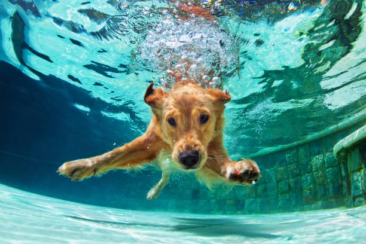
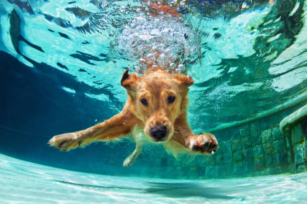

Información Sobre mi:
Alimentación Vegana y Vegetariana:
Me especialice en la Facultad de Medicina de Rosario en Alimentación basada en Plantas.
Amor por los Animales:
Soy Vegetariana desde los 16 años, actualmente Vegana, ya que considero que todos los Animales tienen
Conciencia y Sintiencia.
Obesidad y Sobrepeso:
Especilista en Obesidad y Sobrepeso. Posgrado: Hospital Tornu.
Me Gradue en:
La Facultad de Medicina Fundación Barcelo.

Alimentaci√≥n basada en Plantasüåø:
Los veganos tienen menor riesgo de:
üî¨ Padecer enfermedades del coraz√≥n 40 %.
üî¨ Diabetes 68%.
üî¨ Cáncer en general 18%.
üî¨ Menor mortalidad en general.
Más de 40 Asociaciones científicas de todo el mundo lo avalan, algunas de ellas son:
Dietitians of Canada,sociedad, Academy of Nutrition and Dietetics, Argentina de medicina de estilo de
vida, The British Dietetic Association (BDA) UK, entre otras.

Mindfulness.
Trabajo con Mindful Eating donde ponemos en practica la alimentación consciente, prestando atención
plena a la experiencia de comer, observando tus sensaciones físicas y emocionales sin juicio. Se trata
de estar presente en el momento y disfrutar cada bocado con todos tus sentidos.
Los beneficios son:
üçè Menor estres y ansiedad.
üçè Evitar comer en exceso y mantener un peso saludable.
Sin duda esta tecnica te ayudara a mejorar tu relacion con la comida.

Bajar de Peso sin sufrir es POSIBLE.
üçèConsiste en no hacer dietas mágicas.
üçèTe ense√±o a manejar frecuencias, porciones, a seleccionar y combinar alimentos de forma inteligente
(aportando mayor saciedad y menor impacto glucémico).
üçèTe propongo cambios progresivos, sin efecto rebote ni frustraciones.
üçè Te invito a mejorar tu relaci√≥n con los alimentos.


 
